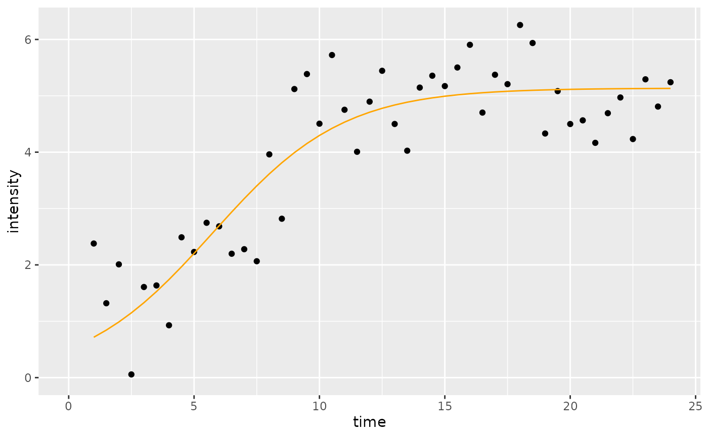
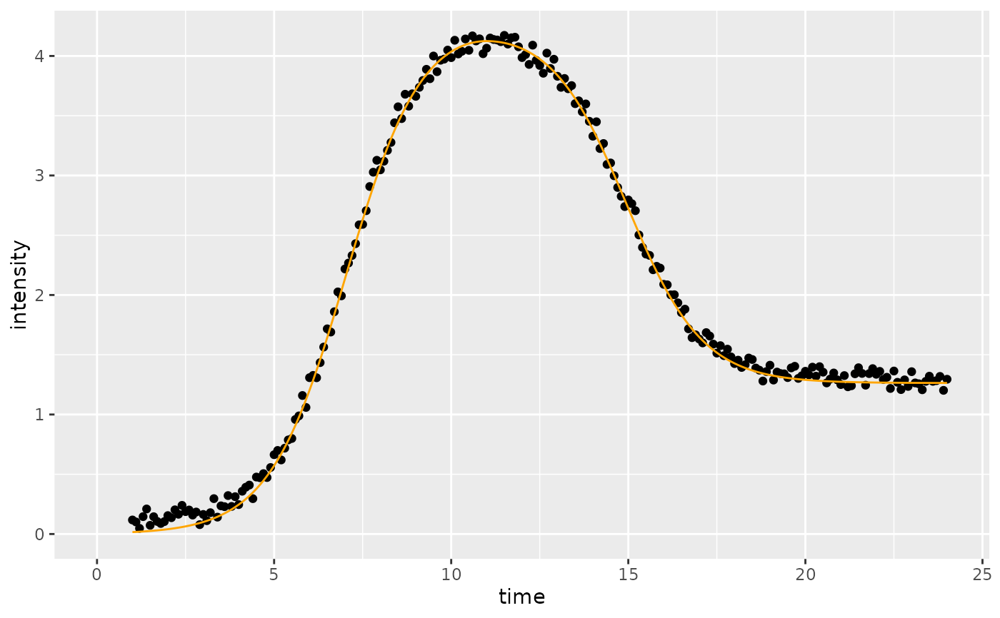

Calls the fitting algorithms to fit the data multiple times with starting from different randomly generated initial parameters in each run. Multiple attempts at fitting the data are necessary to avoid local minima.
Usage
multipleFitFunction(
dataInput,
dataInputName = NA,
model,
n_runs_min = 20,
n_runs_max = 500,
showDetails = FALSE,
...
)Arguments
- dataInput
A data frame or a list contatining the dataframe. The data frame should be composed of at least two columns. One represents time, and the other represents intensity. The data should be normalized with the normalize data function sicegar::normalizeData() before imported into this function.
- dataInputName
Name of data set (Default is 'NA').
- model
Type of fit model that will be used. Can be "sigmoidal", or "double_sigmoidal".
- n_runs_min
This number indicates the lower limit of the successful fitting attempts. It should be smaller than the upper limit of the fitting attempts (n_runs_max). Default is 20.
- n_runs_max
This number indicates the upper limit of the fitting attempts. Default is 500.
- showDetails
Logical if TRUE prints details of intermediate steps of individual fits (Default is FALSE).
- ...
All other arguments that model functions ("sigmoidalFitFunction" and, "doublesigmoidalFitFunction") may need.
Examples
# Example 1 (sigmoidal function with normalization)
time <- seq(1, 24, 0.5)
#simulate intensity data and add noise
noise_parameter <- 2.5
intensity_noise <- stats::runif(n = length(time), min = 0, max = 1) * noise_parameter
intensity <- sigmoidalFitFormula(time, maximum = 4, slopeParam = 1, midPoint = 8)
intensity <- intensity + intensity_noise
dataInput <- data.frame(intensity = intensity, time = time)
normalizedInput <- normalizeData(dataInput, dataInputName = "sample001")
parameterVector <- multipleFitFunction(dataInput = normalizedInput,
model = "sigmoidal",
n_runs_min = 20,
n_runs_max = 500)
#Check the results
if(parameterVector$isThisaFit){
intensityTheoretical <- sigmoidalFitFormula(time,
maximum = parameterVector$maximum_Estimate,
slopeParam = parameterVector$slopeParam_Estimate,
midPoint = parameterVector$midPoint_Estimate)
comparisonData <- cbind(dataInput, intensityTheoretical)
print(parameterVector$residual_Sum_of_Squares)
require(ggplot2)
ggplot(comparisonData)+
geom_point(aes(x = time, y = intensity)) +
geom_line(aes(x = time, y = intensityTheoretical), color = "orange") +
expand_limits(x = 0, y = 0)
}
#> [1] 0.6140231

if(!parameterVector$isThisaFit){
print(parameterVector)
}
# Example 2 (doublesigmoidal function with normalization)
time <- seq(1, 24, 0.1)
#simulate intensity data with noise
noise_parameter <- 0.2
intensity_noise <- stats::runif(n = length(time), min = 0, max = 1) * noise_parameter
intensity <- doublesigmoidalFitFormula(time,
finalAsymptoteIntensityRatio = .3,
maximum = 4,
slope1Param = 1,
midPoint1Param = 7,
slope2Param = 1,
midPointDistanceParam = 8)
intensity <- intensity + intensity_noise
dataInput <- data.frame(intensity = intensity, time = time)
normalizedInput <- normalizeData(dataInput)
parameterVector <- multipleFitFunction(dataInput = normalizedInput,
dataInputName="sample001",
model = "doublesigmoidal",
n_runs_min = 20,
n_runs_max = 500,
showDetails = FALSE)
#Check the results
if(parameterVector$isThisaFit){
intensityTheoretical <-
doublesigmoidalFitFormula(
time,
finalAsymptoteIntensityRatio = parameterVector$finalAsymptoteIntensityRatio_Estimate,
maximum = parameterVector$maximum_Estimate,
slope1Param = parameterVector$slope1Param_Estimate,
midPoint1Param = parameterVector$midPoint1Param_Estimate,
slope2Param = parameterVector$slope2Param_Estimate,
midPointDistanceParam = parameterVector$midPointDistanceParam_Estimate)
comparisonData <- cbind(dataInput, intensityTheoretical)
require(ggplot2)
ggplot(comparisonData) +
geom_point(aes(x = time, y = intensity)) +
geom_line(aes(x = time, y = intensityTheoretical), color = "orange") +
expand_limits(x = 0, y = 0)
}

if(!parameterVector$isThisaFit){
print(parameterVector)
}